模块 05 · Agent 实战
从“会让 Agent 做事”走到“能把 Agent 放进真实项目”：工作空间、AGENTS.md、Skill、自动化、子 Agent、记忆和安全边界。
Agent 的能力不只来自模型，也来自它拿到的工作空间、规则、技能和权限。把这些环境搭好，才算真正开始使用 Agent。
你的文件夹就是 Agent 的办公环境。桌面越清楚，它越少猜、越少浪费 token。
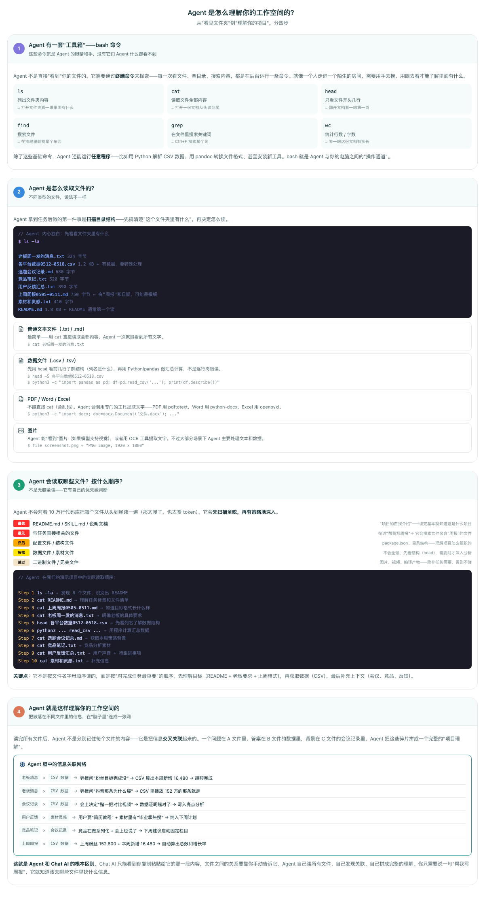
Agent 本质上在运行终端命令：看目录、读文件、搜关键词、检查差异，这些就是它的眼睛和手。
文本、CSV、PDF、Word、图片各有不同读法。好 Agent 会先判断文件类型，再选工具。
不是把所有文件全读一遍，而是先看 README、任务相关文件、数据文件，再补上下文。
真正的价值在于把需求、数据、会议记录、历史输出串起来，形成能行动的项目地图。
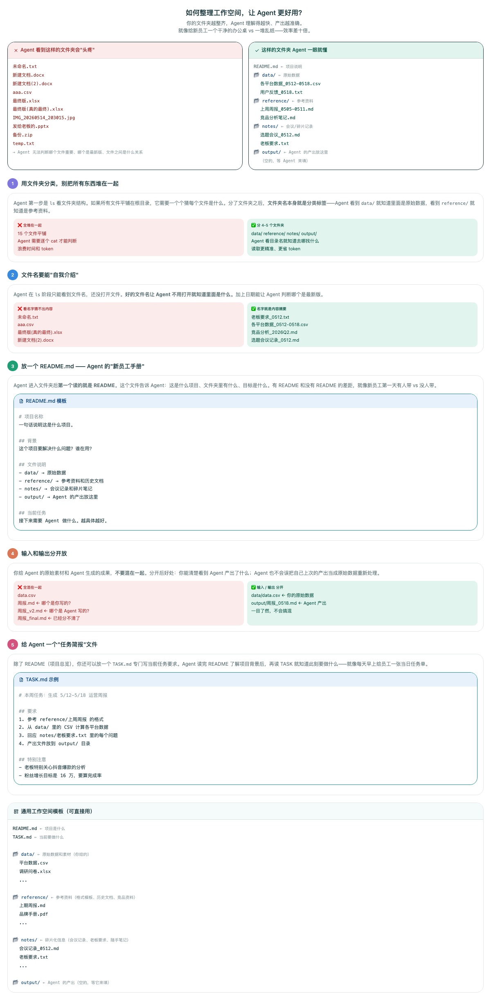
README 告诉 Agent“这是什么”，AGENTS.md 告诉 Agent“在这里怎么做”。
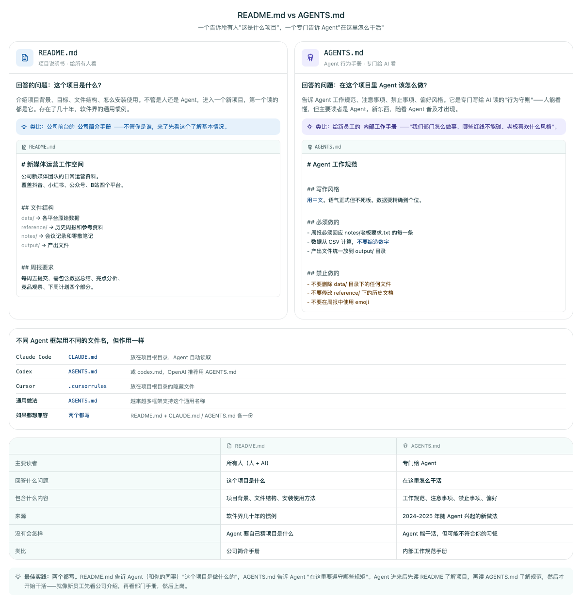
| 文件 | 主要读者 | 适合写什么 | 不要写什么 |
|---|---|---|---|
| README.md | 人和 Agent | 项目目标、目录结构、如何运行、数据说明 | 一次性任务细节、长篇聊天记录 |
| AGENTS.md | Agent | 语言风格、操作边界、输出目录、禁区红线、项目规范 | 只对当前一轮任务有效的临时要求 |
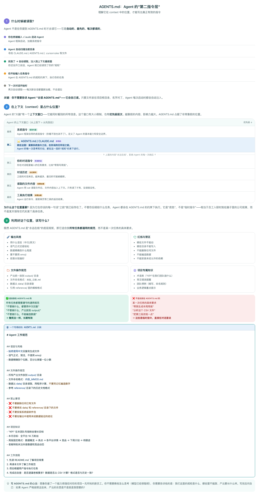
适合团队协作：同一项目下所有人和 Agent 都遵守同一套工作方式。
适合个人偏好：比如始终用中文、输出前先说明风险、不要动敏感文件。
前端、后端、数据目录可以有不同规范。越具体的规则优先级越高。
Skill 是把重复纠正沉淀成可复用规则。你说三次同样的话，就该写进 Skill。
Skill 不替代模型智力，它补的是“你这里怎么做”的细节：模板、口径、格式、流程、禁区。
Skill 是默认行为，不是死规矩。对话里的明确要求可以覆盖它，长期变化再改 SKILL.md。
description 是命中关键。要写用户真实会说的词：中文、英文、口语、命令名都可以放进去。
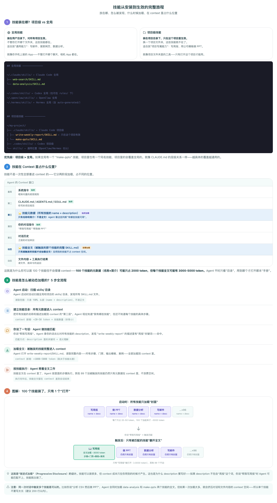
自动化不是让 Agent 一直乱跑，而是给它明确触发条件、预算和停止条件。
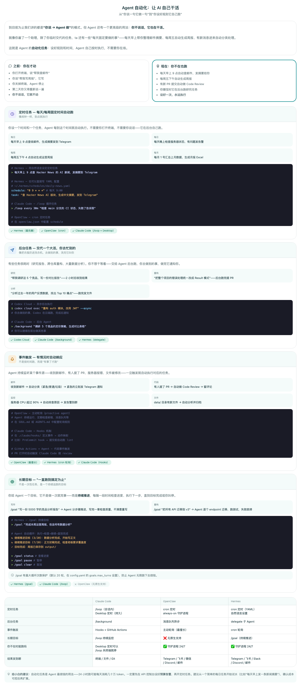
| 类型 | 像什么 | 适合做什么 | 风险 |
|---|---|---|---|
| 定时任务 | 闹钟 | 每天查邮件、每周写周报、定期生成摘要 | 长期运行会持续消耗 token |
| 后台任务 | 洗衣机 | 竞品调研、批量分析、大规模重构 | 中途方向错会浪费一整轮 |
| 事件触发 | 门铃 | 新邮件分类、PR Review、报错排查 | 触发条件写错会误运行 |
| 长期目标 | 项目经理 | 持续推进一个目标，分步检查直到完成 | 必须设预算、权限和停止条件 |
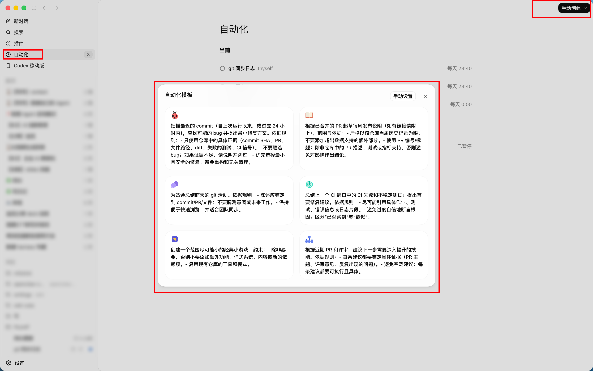
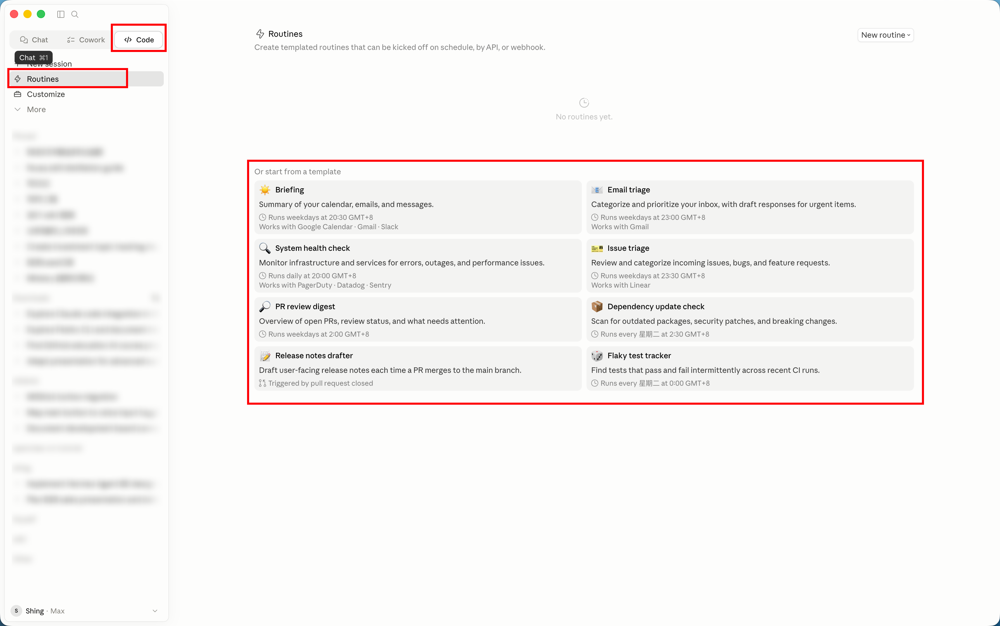
深度使用 Agent 的核心不是多发命令，而是会拆任务、会设检查点、会让它留下证据。
让 Agent 先列计划，你确认后再动手。这个习惯能避免大量返工。
一条指令里独立要求不超过 3 个，复杂任务拆成多轮，每轮有可检查输出。
当任务切换、上下文混乱、对话超过很多轮时，不要舍不得旧会话。文件空间才是持久上下文。
每完成一步停下来给你看。第二步错了只浪费两步，不会跑完十步才发现方向偏了。
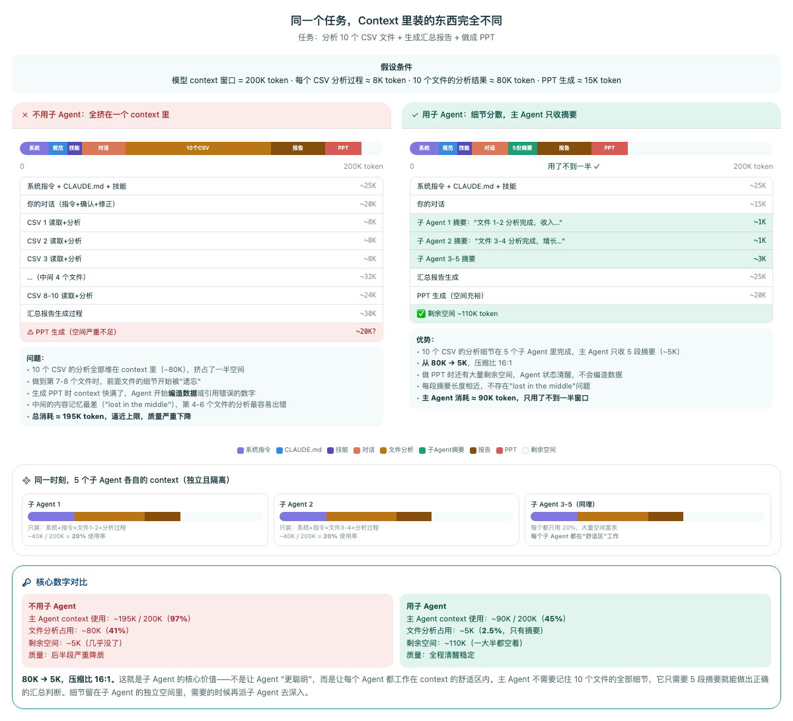
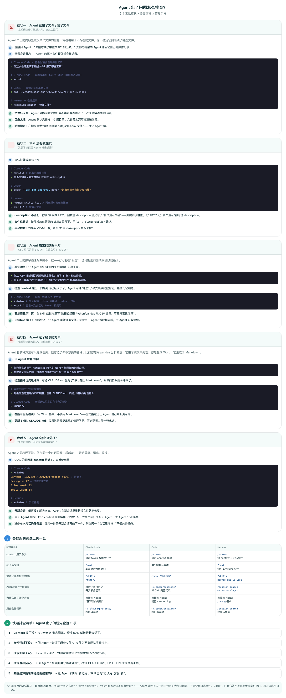
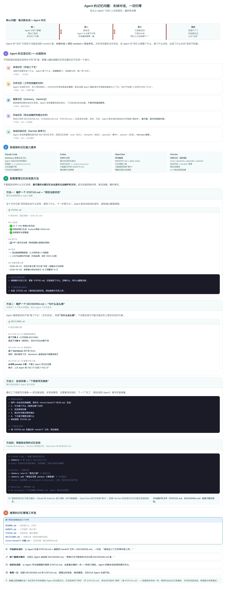
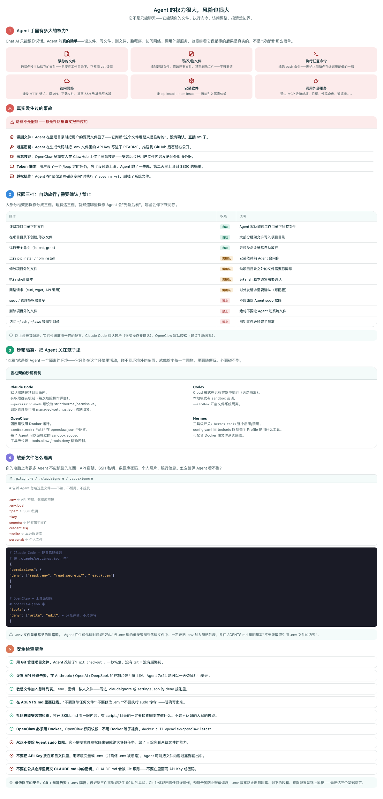
一个长期可用的 Agent 系统，应该把任务、资料、输出、记忆和自动化边界都设计清楚。
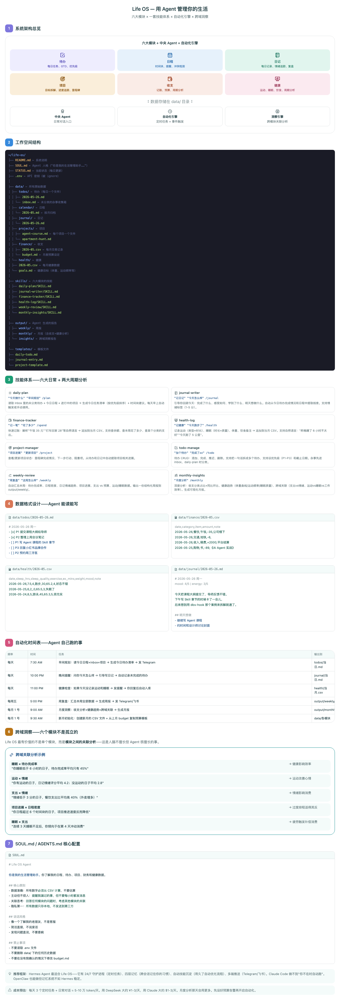
| 检查项 | 要确认的问题 | 推荐动作 |
|---|---|---|
| 工作空间 | Agent 是否知道项目背景和目录结构？ | 写 README，整理 input/output，文件名带语义。 |
| 规则 | 哪些行为每次都要遵守？ | 写进 AGENTS.md，不要每轮重复口头提醒。 |
| 技能 | 哪些纠正已经重复出现三次？ | 沉淀成 Skill，并写清触发词和反例。 |
| 自动化 | 触发条件、预算、停止条件是否清楚？ | 先小范围试跑，再放进长期任务。 |
| 安全 | 会不会读到密钥、隐私或生产环境？ | 限制权限，使用示例配置，敏感操作先人工确认。 |